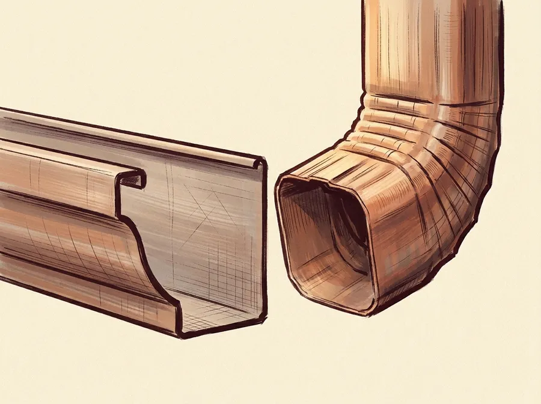

New Gutter Installation
Rainhouse Gutter Co. installs 5-inch and 6-inch K-style seamless aluminum gutters, sized to the roof in front of them. Larger roofs, or systems that need to be done with fewer downspouts, get an oversized downspout instead.

Most gutter companies call their work “seamless.” Here’s what that actually means: instead of joining short, factory-cut sections end to end, a seamless run is formed on site to the exact length of your roofline, so the only joints are at the corners and the downspout outlets.
Seamless aluminum gutters can last up to 20 years or more.